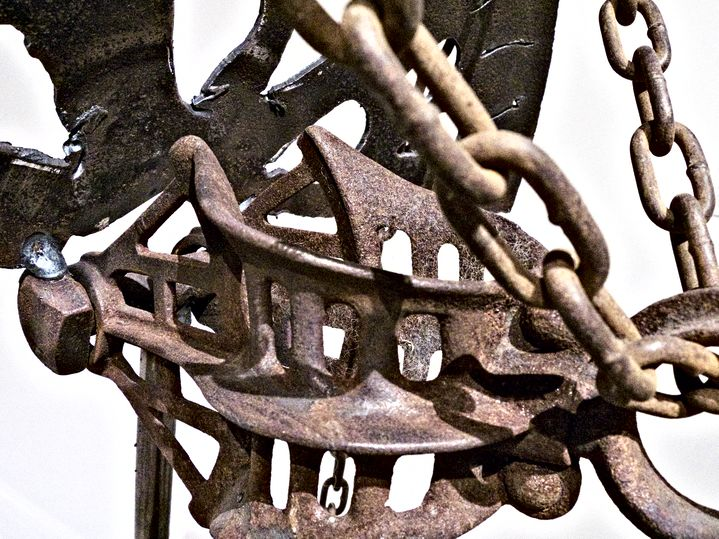

You are mostly cavities when I see you. A marvel of structural integrity. So tense you could never move. I imagine poking my fingers through your holes, curling them around, a child holding a chain-link fence. They don't even want you touching the walls here, the oils of your fingers. I can see those walls through you, I can see yourself through you. It's unspoken. You're not for touching. Nothing is stopping me. Imagining the texture of you, rough. Cold. Curving like my jaw biting down on a cymbal, struck so my whole skull vibrates. Rigid pole, taut chains bind you to an unfinished concrete floor. Not even a price for admission. Anyone could see you, but somehow I am the only one looking. They don't love you like I love you.
